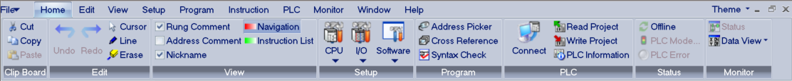
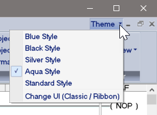
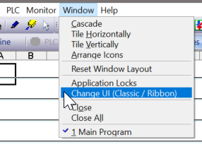

| Ribbon User Interface |
|
The CLICK Programming Software now features an updated Ribbon User Interface, which can replace the Main Menu and Toolbars of the Classic interface. The Ribbon UI is intended to make navigation easier and more efficient.

Each top-level menu option from the classic interface has a corresponding ribbon. The sets of tools found on the toolbar in the Classic interface are now available in the Home ribbon.
In the Ribbon UI, once you select a ribbon from the top menu, the ribbon and all its tools stay selected and quickly available until you change ribbons.
As you use this help system, be aware that any item accessible from the Classic interface is also available in the Ribbon UI, and should be easy to find under the same hierarchy.
Several color schemes are available for the Ribbon UI, and can be selected from the Theme dropdown menu in the upper right corner of the Ribbon interface.

The Theme dropdown also contains an option to revert to the Classic UI. If you have switched to the Classic UI, and wish to change back to the Ribbon UI, the Change UI option is located under the Window menu in the Classic UI.
